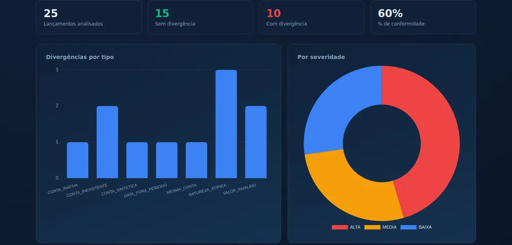
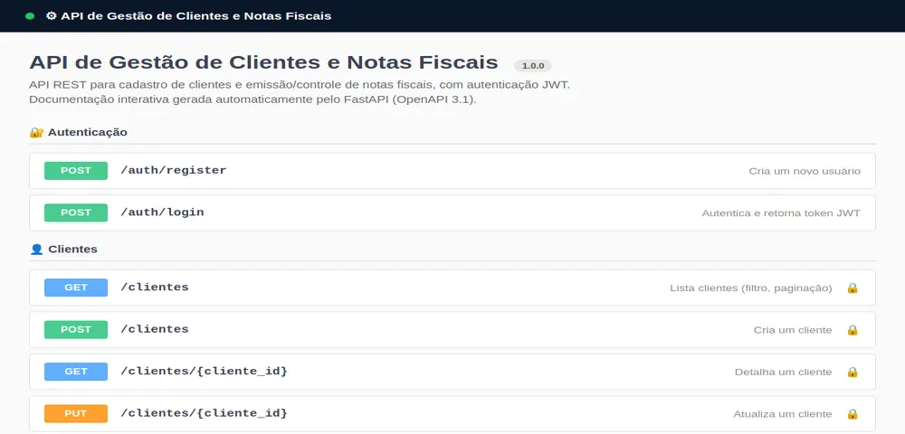

Perfil Profissional
Trabalho como Assistente Fiscal há mais de um ano e meio. Minha rotina envolve emissão e análise de notas fiscais, CFOP, ICMS, plano de contas e relatórios quinzenais. Valorizo precisão e prazos.
Disponível para oportunidades
Assistente Fiscal · Engenharia de Software
Atuo como Assistente Fiscal na Rede M7 e curso Engenharia de Software na UCSC. Nos meus projetos, aplico programação a processos fiscais do dia a dia.
Quem sou eu
Um resumo do meu caminho entre a área fiscal e a tecnologia.
Trabalho como Assistente Fiscal há mais de um ano e meio. Minha rotina envolve emissão e análise de notas fiscais, CFOP, ICMS, plano de contas e relatórios quinzenais. Valorizo precisão e prazos.
Cursando Engenharia de Software na UCSC. A ideia é aplicar o que estudo em programação a problemas fiscais reais, como conferências e relatórios.
Trajetória
Atuação em conformidade tributária, com atenção a prazos e precisão.
Rede M7 · Área Fiscal · Corupá, SC
Educação
Formação acadêmica em andamento.
Universidade Católica de Santa Catarina (UCSC) · Jaraguá do Sul, SC
Em andamentoCompetências
Ferramentas e competências que uso no trabalho e nos estudos.
Trabalhos
Dois projetos em Python que automatizam tarefas que eu fazia manualmente no trabalho.

Ferramenta full-stack que confere lançamentos contábeis contra o plano de contas. Aplica regras de escrituração, marca divergências (contas inexistentes, sintéticas, inativas ou com valores inválidos) e gera um relatório visual de conformidade.

API REST com autenticação JWT para cadastro de clientes e controle de notas fiscais. A modelagem segue a prática contábil: nota fiscal nunca é deletada, apenas cancelada, para preservar o histórico. Vem com documentação interativa e 19 testes automatizados.
Vamos conversar
Estou aberto a novas oportunidades e trocas profissionais. Se a sua vaga combina com o meu perfil, é só me chamar por e-mail ou LinkedIn.